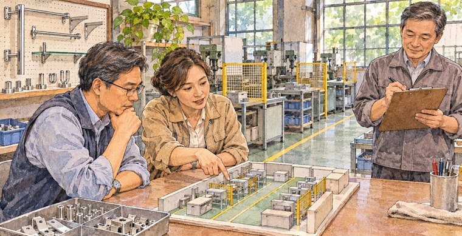

STR-33 · 台灣 · 15–20分鐘 · 規模與產能使用率 · 學習與經驗 · 成本優勢的來源
廠房更大，成本為何更低？

成本下降，原因不止一個
單位成本下降，可能是因為固定開支由更多產品分攤、生產方法有所改善，或投入品價格下降。不同機制所指向的增長策略並不相同。下文的台灣生產商和所有數字均屬虛構；沒有任何來源證實有通用的學習率，也沒有來源保證廠房越大，成本就越低。
課堂決定
你掌管台中一家虛構生產商 Formosa Display，公司只生產一款規格維持不變的專用顯示器配件。未來十二個月，你要選擇 G：租用配備設備的較大廠房；或 L：續租現有生產線，並撥款推行有系統的學習計劃。兩個方案都保留內部生產，不涉及外判決定。
較早一個月，公司生產並售出1,000件合格配件，平均生產成本為NT$420。其後一個月，公司生產並售出2,000件，平均成本為NT$300。一名同事認為，產量翻倍令成本大幅下降，因此增添較大的廠房，應能延續同樣的降幅。目前尚未按成因拆解成本紀錄。
現有生產線每月最多可安全生產2,500件合格配件；G 則可生產4,000件。兩個方案的品質、產品規格和交付服務完全相同，並無隱藏的瓶頸。有薪休息時間、工資率及安全工作條件均受保障，兩個方案都不涉及削減人手。
L 每年須承擔NT$1,440,000的固定營運開支，另加NT$120,000，用於有薪指導、記錄工作方法及檢討改善成效。G 每年的固定開支承擔合共NT$2,880,000，包括搬遷、過渡支援及同等的學習計劃。較大的廠房不能代替學習；兩個方案都預留學習時間。
兩個方案都是為期十二個月的完整服務及租賃組合，並非購置廠房。各方案特有的啟動及退出成本均已計入；比較期結束後，不會有剩餘資產或後續付款。兩個方案的費用均可負擔。目標是在銷量要求相同、品質和服務不變的前提下，降低相關總成本。
核准銷量和後續適用的投入品價格，要待詳細檢討時才會揭曉。目前尚未簽訂任何投資協議。只按核准銷售計劃生產：未售出的產品不能算作節省成本的效益。兩個方案相同的公司間接開支及收入不予考慮；價格溢價、市場份額增幅或策略效益均未量化。
兩個虛構的過往月份 · 同一條現有生產線| 指標 | 較早月份 | 其後月份 |
|---|
| 合格品銷量 | 1,000 | 2,000 |
| 平均生產成本 | NT$420 | NT$300 |
你的決定你會暫時傾向 G 還是 L，抑或暫不提出建議？要把單位成本下降NT$120視為採用較大廠房的證據，你需要先拆解哪些因素？
第二輪 · 多了一項資料
過往兩個月的固定生產開支相同，均為NT$120,000。較早一個月，每件合格品的變動材料成本為NT$180，變動加工成本為NT$120；其後一個月則分別為NT$150及NT$90。下表按這些紀錄逐項核對成本；會計涵蓋範圍和產品組合均沒有改變。
過往每件合格配件的成本 · NT$| 成本項目 | 較早月份 | 其後月份 |
|---|
| 固定開支 ÷ 每月產量 | 120 | 60 |
| 材料 | 180 | 150 |
| 加工 | 120 | 90 |
| 合計 | 420 | 300 |
經核實的工作方法紀錄顯示，加工成本節省NT$30，源於反覆生產中形成的工作常規：每件合格配件所需的返工和搬運工序均減少。工資率、品質檢查和工作保障均沒有改變。這項因果歸因是由個案設定的紀錄支持的課堂假設，並非單憑兩個月的平均成本推斷。
材料成本節省NT$30，源於供應商的短期促銷，與採購量無關。促銷已經結束。兩個方案來年的價格均已確認為每件NT$180，沒有批量回扣。降低加工成本的工作常規在兩個廠址都可沿用；單靠租用更多空間，不會進一步節省加工成本。
在這項比較中，來年銷量定為每月2,000件合格品，全年合共24,000件。兩個方案都能安全供應所需數量。不會有額外銷售、存貨累積或日後補回的銷量。兩個獲撥款的計劃都會維持現有工作方法；全年加工成本按每件NT$90編列預算。
兩個計劃也會測試進一步改善的方法，但這次決策不假設成本會再下降。沿用同一設計，保留原有的資深團隊；兩個方案均包括所需的知識轉移和入職培訓。實際表現必須檢討。累積更多經驗或有幫助，但既未證實有任何翻倍法則，也未證實成本可以無限下降。
你的決定就指定的一年而言，你會推薦哪個方案？請逐項核對過往節省的成本，計算兩個方案的全年成本及單位成本，並說明哪些證據足以支持重新考慮較大的廠房，而不假設產能本身會帶來需求或學習。
講評 · 三種不同的機制
單位成本降幅為NT$420 − NT$300 = NT$120，即約28.6%。其中NT$60來自分攤同一筆每月NT$120,000的固定開支：分攤的產品由1,000件增至2,000件。NT$30來自個案設定的工作方法改善，另有NT$30來自投入品價格暫時下降。
觀察到的降幅只有一半來自固定成本分攤。要有這種效果，當期產量須增加，而相關固定開支須維持不變。這並不證明較大廠房採用的技術更優勝，也不證明存在長期規模經濟。G 會改變固定開支承擔，因此不能直接沿用以往按產量作分母的計法。
講評 · 產量不等於經驗
當月產量決定每月固定開支如何分攤。累積生產經驗則關乎組織在反覆工作中學到了甚麼。企業毋須把當期產量翻倍，也能保留有效的工作常規；增加閒置產能本身不會帶來經驗。在本個案中，兩個方案都可沿用現有加工技術和經驗。
材料促銷改變的是投入品價格，而不是所需用量或團隊的技能。個案已明確指出，這並非批量折扣。在其他情況下，擴大採購規模可以爭取更佳的供應條款，但本個案並無這種機制。推算成本優勢能否持續之前，先把三項成因分開。
講評 · 按實際銷售計劃計算成本
兩個方案的全年變動生產成本均為24,000 × (NT$180 + NT$90) = NT$6,480,000。L 另有固定成本NT$1,440,000 + NT$120,000 = NT$1,560,000，總成本為NT$8,040,000，即每件合格品NT$335。學習計劃有撥款，費用已計入，並非免費。
G 另有NT$2,880,000的固定成本，總成本為NT$9,360,000，即每件合格品NT$390。L 全年節省NT$1,320,000，相當於每件NT$55。在個案指定的銷量和服務相同的前提下，應選 L。這是相關成本的比較，並非比較公司整體利潤，也不是說公司永遠不應擴張。
講評 · 解釋成本為何從NT$300上升
L 的單位成本為NT$335，高於近期的NT$300，原因是短期材料優惠結束，成本增加NT$30，而全年的學習計劃亦令每件成本增加NT$120,000 ÷ 24,000 = NT$5。即使加工成本維持在NT$90，也不會抵銷這兩項變化。單位成本上升，不一定表示團隊忘記了原有的工作方法。
講評 · 憑證據重新評估擴張方案
G 的閒置產能不等於已售出的產量。若把成本除以48,000件，就等於假設銷量是個案給定銷量的兩倍。日後若要擴張，需要有可信的新增需求及價格資料、個別廠址的生產力證據和過渡成本資料，並須與其他可行的產能方案比較。個案沒有提供新一輪增長情景所需的這些資料。
分開追蹤投入品價格、固定開支承擔、合格品產量、返工和加工所需資源。記錄團隊學會了哪些方法，以及另一個團隊能否照樣做到。只有經測試取得支持證據，才應把進一步節省的成本納入修訂方案。不要把過往的百分比變成每年保證達到的改善目標。
教師說明
給學生三分鐘提出初步建議、四分鐘拆解成本差額、五分鐘作全年比較，再用三分鐘修正擴張理據。問學生哪些成本因當期產量、已掌握的技術或投入品價格而改變。注意區分固定成本總額與單位固定成本。
STR-03 討論應把哪項能力外判；OPS-03 討論哪個生產工序限制產量。本個案的兩個方案都有足夠的內部產能，也保留學習安排。策略問題在於所聲稱的成本優勢是否需要更大規模，而不在於加快某個工序或借助外部供應商能否完成生產。
第二輪
過往兩個月的固定生產開支相同，均為NT$120,000。較早一個月，每件合格品的變動材料成本為NT$180，變動加工成本為NT$120；其後一個月則分別為NT$150及NT$90。下表按這些紀錄逐項核對成本；會計涵蓋範圍和產品組合均沒有改變。
過往每件合格配件的成本 · NT$| 成本項目 | 較早月份 | 其後月份 |
|---|
| 固定開支 ÷ 每月產量 | 120 | 60 |
| 材料 | 180 | 150 |
| 加工 | 120 | 90 |
| 合計 | 420 | 300 |
經核實的工作方法紀錄顯示，加工成本節省NT$30，源於反覆生產中形成的工作常規：每件合格配件所需的返工和搬運工序均減少。工資率、品質檢查和工作保障均沒有改變。這項因果歸因是由個案設定的紀錄支持的課堂假設，並非單憑兩個月的平均成本推斷。
材料成本節省NT$30，源於供應商的短期促銷，與採購量無關。促銷已經結束。兩個方案來年的價格均已確認為每件NT$180，沒有批量回扣。降低加工成本的工作常規在兩個廠址都可沿用；單靠租用更多空間，不會進一步節省加工成本。
在這項比較中，來年銷量定為每月2,000件合格品，全年合共24,000件。兩個方案都能安全供應所需數量。不會有額外銷售、存貨累積或日後補回的銷量。兩個獲撥款的計劃都會維持現有工作方法；全年加工成本按每件NT$90編列預算。
兩個計劃也會測試進一步改善的方法，但這次決策不假設成本會再下降。沿用同一設計，保留原有的資深團隊；兩個方案均包括所需的知識轉移和入職培訓。實際表現必須檢討。累積更多經驗或有幫助，但既未證實有任何翻倍法則，也未證實成本可以無限下降。
你的決定就指定的一年而言，你會推薦哪個方案？請逐項核對過往節省的成本，計算兩個方案的全年成本及單位成本，並說明哪些證據足以支持重新考慮較大的廠房，而不假設產能本身會帶來需求或學習。